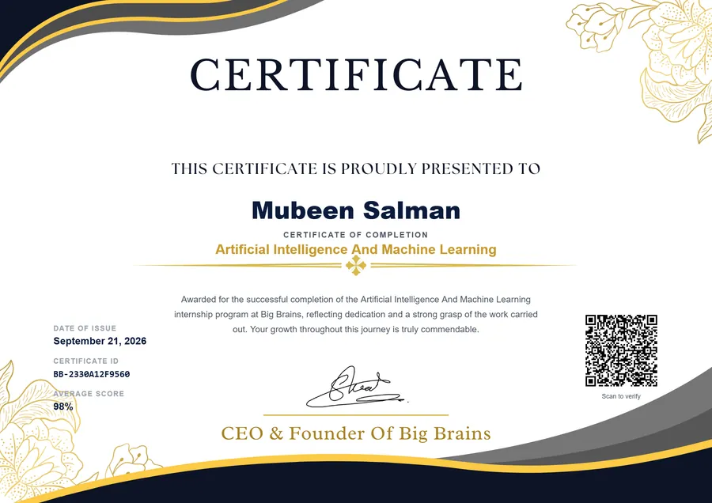
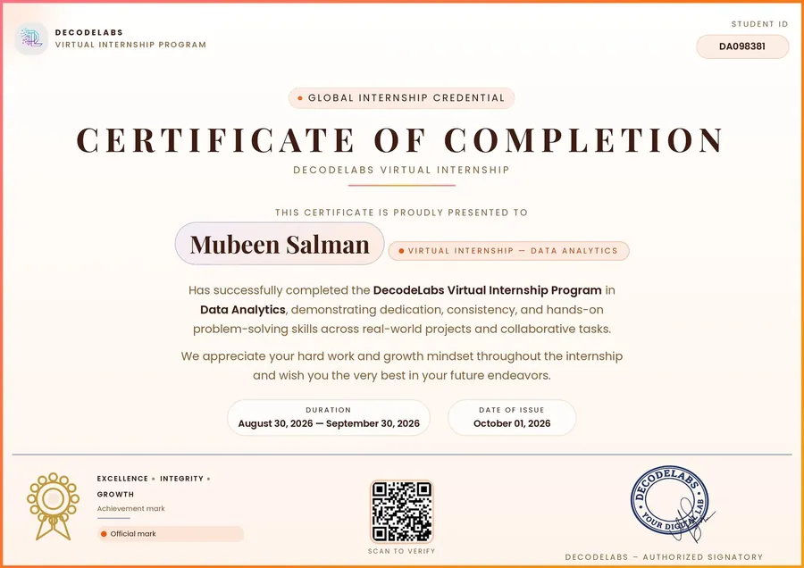

Open to full-time & internship roles
Mubeen
Salman
Data Analyst · BS Information Technology Student
Data Analyst with a focus on turning raw datasets into clear business insights through Python, SQL, and Pandas. Builds dashboards and visualizations in Power BI and Matplotlib to communicate findings, and supports data cleaning, transformation, and reporting workflows. Applies analytical thinking to real-world datasets while strengthening practical machine learning skills.
About me
I am a BS Information Technology student (6th semester) at the University of Management and Technology (UMT), Lahore, specializing in Data Analytics, Machine Learning, and Full-Stack Development.
I work extensively with Python, SQL, Scikit-learn, Pandas, and modern AI/LLM technologies (RAG, API Integration, Computer Vision) to build practical, data-driven applications and machine learning workflows. My practical coursework and project background also span Cloud Computing, Web Technologies (Django, Laravel, Node.js), and Network Security.
I am actively building hands-on projects, expanding my open-source work on GitHub, and seeking internship or entry-level opportunities in Data Analytics, Machine Learning, and Software Development.
Quick facts
- Currently building Data Analytics & Machine Learning projects
- Hands-on with RAG, LLM integrations, Scikit-learn & OpenCV
- Experienced in Full-Stack Web Dev (Django, Laravel, Node.js)
- Built Active Directory, Cisco Routing & Database projects in academic labs
- Generative AI Intern at Arch Technologies · Data Analytics Intern at Decode Labs · Certificates: Big Brains (AI/ML) & DecodeLabs (Data Analytics)
Skills
AI & Data Science
Software & Web Dev
Networking & Cloud
Tools & Platforms
Projects
Selected projects spanning data analytics, machine learning, RAG systems, networking, and full-stack development — ordered by impact and technical depth.
Interactive AI web app integrating multi-LLM APIs for real-time document analysis and NLP tasks with a Streamlit interface.
Machine learning workflow using Scikit-learn to forecast customer behavior and sales trends with preprocessing and evaluation.
Simulated multi-site corporate network with routing, Active Directory, DHCP, GPO, Static NAT, and role-based access control.
Database-backed banking application with secure authentication, real-time transactions, and automated ledger reporting.
Responsive dynamic web platform with database-driven content management, catalog filtering, and modern UI/UX design.
Online assessment portal with dynamic question generation, real-time scoring, and automated user result tracking.
No projects match this combination.
Experience
Generative AI Intern
Oct 2026 – Nov 2026 · 2 mosArch Technologies · Internship · Remote · Lahore, Pakistan
- Build and deploy custom Generative AI models, prompt templates, and automated workflow integrations.
- Implement advanced prompt architecture, fine-tuning techniques, and generative tools for data tasks.
- Collaborate on remote technical projects focusing on scalable end-to-end AI deployment and execution.
Artificial Intelligence Intern
Aug 2026 – Sep 2026 · 2 mosBig Brains · Remote Internship · Lahore, Pakistan
- Build and evaluate machine learning classification and predictive models using Python, Pandas, Scikit-learn.
- Execute data preprocessing, feature engineering, and hyperparameter tuning to boost predictive accuracy.
- Explore practical Generative AI applications and integrate AI models into structured software workflows.
Data Analytics Intern
Aug 2026 – Sep 2026 · 1 moDecode Labs · Remote Internship · Lahore, Pakistan
- Perform data extraction, cleaning, and transformation on real-world datasets using Python, Pandas, and SQL.
- Construct interactive dashboards and visualizations with Power BI and Matplotlib to show actionable insights.
- Optimize relational database queries (MySQL, MS SQL Server) to support business analytics workflows.
Education
Bachelor of Science in Information Technology (BS IT)
University of Management and Technology (UMT) · Lahore, Pakistan
Relevant coursework: Machine Learning, Cloud Computing, Data Structures, Analysis of Algorithms, Database Systems, Network Security
Intermediate in Pre-Engineering (FSc)
Punjab Group of Colleges · Lahore, Pakistan
Matriculation (Science)
H.Q School System · Lahore, Pakistan
Certificates
Recognitions and program completions from internships and professional training.


Artificial Intelligence And Machine Learning
Big Brains · Certificate of Completion
Awarded for successful completion of the Artificial Intelligence and Machine Learning internship program at Big Brains.



Data Analytics Virtual Internship
DecodeLabs · Certificate of Completion
Awarded for successful completion of the DecodeLabs Virtual Internship Program in Data Analytics, demonstrating dedication, consistency, and hands-on problem-solving across real-world projects.

Let’s work together
I am actively seeking internship and entry-level opportunities in Data Analytics, Machine Learning, and Software Development. Whether you have a project idea, a position to discuss, or simply want to connect, my inbox is open.
Lahore, Pakistan